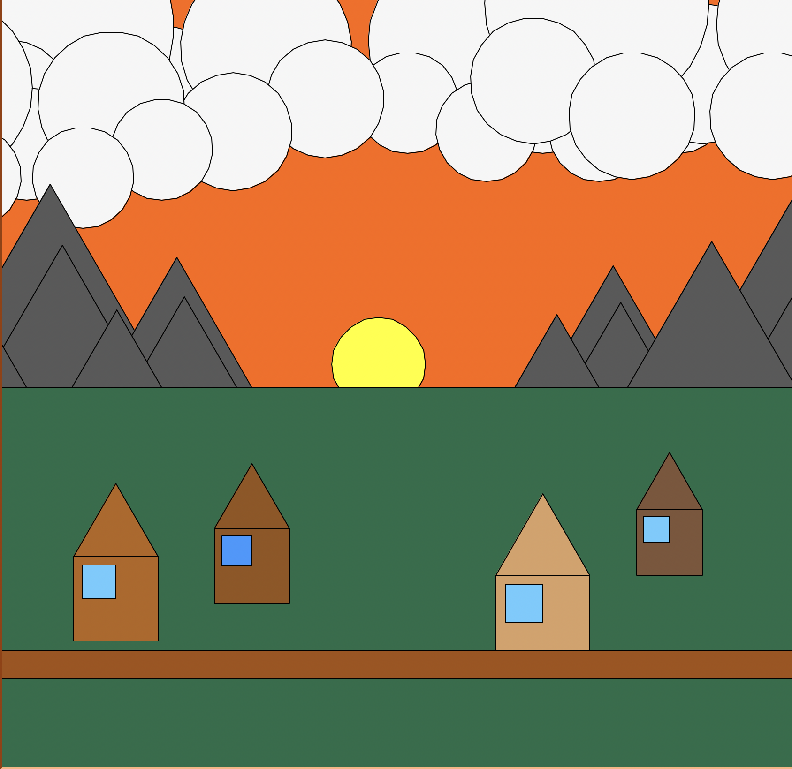

what happens in project 3 is the useage of the turtle module. With the use of creating shapes and patters into a form of a visual artwork what makes this project unique is the use of generalized functions.
# Example 1: Setup Turtle
def setup_turtle():
"""Initialize turtle with standard settings"""
t = turtle.Turtle()
t.speed(0) # Fastest speed
screen = turtle.Screen()
screen.title("Turtle Graphics Assignment")
return t, screen
# Example 2: Draw a House
def draw_house(t, x, y, size, wall_color="#9C8B50", window_color="#3399ff"):
"""Draw a house with customizable colors"""
jump_to(t, x, y)
draw_square(t, size, fill_color=wall_color)
jump_to(t, x, y)
draw_triangle(t, size, fill_color=wall_color)
jump_to(t, x + size*0.1, y - size*0.1)
draw_square(t, int(size*0.4), fill_color=window_color)
# Example 3: Draw the Scene
def draw_scene(t):
# Set background color
screen = t.getscreen()
screen.bgcolor("#ff6600")
#sun
jump_to(t,-25,-25)
draw_circle(t,50,fill_color="yellow")
#ground
jump_to(t,-500,0)
draw_rectangle(t,1000,500,fill_color="#246d49")
#clouds
draw_cloud(t, 150,250, scale=1.2, color="#f6f6f6")
#mountains
draw_mountain(t, 150, 0, 150, fill_color="#595959")
#houses
draw_house(t, -200, -150, 80, wall_color="#95541b", window_color="#3399ff")
#road
jump_to(t,-450,-280)
draw_rectangle(t,1000,30,fill_color="#a45111")
Results
